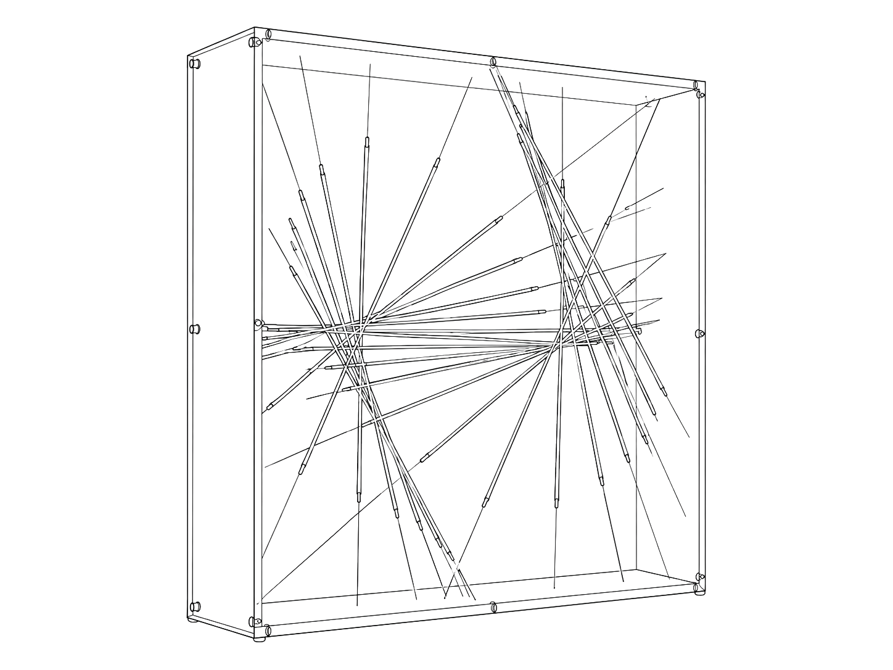
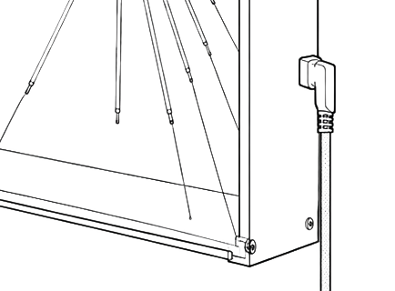
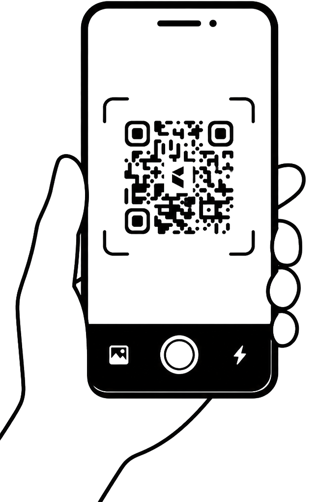

the invisible whispers of the shifting climate.
WiFi Connection Steps
Step 1 - 插入電源

Step 2 - 用行動裝置搜索 "Resona_Setup" 並連線或掃描 QRCODE 直接連線
Step 3 - 掃描裝置設定QRcode

Step 4 - 掃描WiFi網路
Step 5 - 選擇WiFi網路
Step 6 - 輸入密碼後連接
WiFi 密碼
Step 7 - 正在連接
正在連接...
WHYIXD24G
這可能需要最多20秒，請稍候
Step 8 - 連接成功
連接成功
resona已成功連接到WiFi網路
Step 9 - 設備重新啟動
設備正在重啟...
請稍候，設備即將重新連接到網路。
Step 10 - 若連接失敗
連接失敗
無法連接到「WHYIXD24G」，請確認後重試。
連線逾時：裝置找到網路但無法完成連線，請靠近路由器後重試。